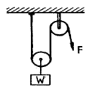

천장크레인운전기능사 (2015-04-04 기출문제)
1과목: 임의 구분
1. 와이어로프 등이 훅으로부터 이탈되는 것을 방지하는 안전장치는?
- 훅 고정장치
- 훅 해지장치
- 로프 고정장치
- 로프 해지장치
(정답률: 73%)

2. 천장크레인의 비상정지장치에 대한 설명 중 틀린 것은?
- 비상정지장치가 작동되어도 권하 동작만은 중지되지 아니한다.
- 비상정지장치의 누름버튼은 돌출형이고 적색이어야 한다.
- 비상정지장치는 접근이 용이한 곳에 배치되어야 한다.
- 비상정지장치가 작동된 경우 수동으로 전원을 복귀시키는 구조이어야 한다.
(정답률: 88%)
3. 훅(Hook)에 대한 내용 중 틀린 것은?
- 50톤 이상의 훅은 고리가 반드시 1쪽만으로 되어 있어야 하중을 집중해서 들어 올릴 수 있다.
- 훅에는 와이어로프 슬링, 와이어로프걸이용 기구 등이 이탈되는 것을 방지하는 해지장치가 부착되어야 한다.
- 훅의 강도는 각 부분에 인장하중, 압축하중, 전단하중이 걸리므로 그 응력을 이겨내는 강도를 필요로 하므로 안전계수 5 이상의 것을 사용한다.
- 훅 사용 중에 줄 걸이 부분의 마모는 원치수의 5% 이하 이고 2㎜ 이하 일 때는 다듬어서 사용한다.
(정답률: 78%)
4. 일반적으로 차륜의 재료로 사용되지 않는 것은?
- 주철
- 주강
- 특수 주강
- 구리
(정답률: 82%)
5. 천장주행크레인의 크래브(crab)프레임 위에 설치되는 기계 구성품이 아닌 것은?
- 드럼
- 권상용 전동기
- 횡행용 전동기
- 주행용 전동기
(정답률: 58%)
6. 와이어로프를 드럼에서 최대로 풀었을 때 드럼에 최소 몇 바퀴 이상 남겨 놓아야 하는가?
- 1바퀴
- 2바퀴
- 4바퀴
- 6바퀴
(정답률: 82%)
7. 양정이 50m를 넘는 천장크레인의 사용하중결정법으로 가장 적당한 것은?
- 와이어로프의 절단하중을 정격하중으로 한다.
- 와이어로프의 안전율은 정격하중에 훅과 블럭의 무게만을 고려하여 정한다.
- 와이어로프의 안전율은 정격하중에 훅, 블럭 및 로프 중량까지를 고려하여 정한다.
- 와이어로프의 안전율은 와이어로프의 절단하중에 대하여 정격하중을 2~3으로 하는 것이 적당하다.
(정답률: 62%)
8. 와이어로프의 지름이 20㎜인 경우 한국산업표준에서 정하고 있는 제조 시 기름의 허용차는 얼마인가?
- 0 ~ -7%
- 0 ~ ＋7%
- 0 ~ -5%
- 0 ~ ＋5%
(정답률: 64%)
9. 마그넷 브레이크 점검결과 라이닝 두께가 30% 감소되었을 때 조치 방법으로 가장 적절한 것은?
- 스트로크를 조정한다.
- 라이닝을 교환한다.
- 브레이크 드럼직경을 크게 한다.
- 마모 한도에 달할 때까지 계속 사용한다.
(정답률: 78%)
10. 리밋 스위치(Limit S/W)에 대한 설명 중 틀린 것은?
- 보통 권상장치에 사용하나, 필요에 따라 주·횡행에도 설치·사용할 수 있다.
- 권하 시 리밋 스위치가 작동하는 지점은 드럼에 와이어로프가 약 3바퀴 정도 남아있는 지점이다.
- 비상용 리밋 스위치는 상용 리밋 스위치가 고장이 났을 때 작동하는 것이다.
- 횡행 리밋 스위치는 중추식이 이용된다.
(정답률: 50%)
11. 크레인에 과부하 방지장치(안전밸브)를 부착 시 해당되는 내용이 아닌 것은?
- 법 규정에 의한 안전인증품일 것
- 정격하중의 1.1배 권상 시 경보와 함께 권상작동이 정지될 것
- 선회, 횡행 및 주행 작동이 가능한 구조일 것
- 임의로 조정할 수 없도록 봉인되어 있을 것
(정답률: 59%)
12. 천장크레인 주행 장치의 동력전달부분에 관한 설명으로 틀린 것은?
- 단일전동기로서 단일감속기어 케이스에 출력을 공급하는 구조가 중앙기어 케이스 구동식이라 한다.
- 출력축이 전동기 양쪽으로 연결된 2중 전동기를 사용하는 것을 중앙전동기 구동식이라 한다.
- 중앙전동기 구동과 중잉기어 케이스의 복합 형태를 이중기어 케이스 구동식이라 한다.
- 독립륜 구동식은 2개의 전동기가 각각 독립적으로 설치되어 있다.
(정답률: 53%)
13. 천장크레인 배전반의 설치목적이 아닌 것은?
- 전동기 보호
- 전동기 제어
- 발전기 구동제어
- 전원의 개폐
(정답률: 48%)
14. 사용 중인 천장크레인에서 저항기의 발열온도는 몇 ℃까지 허용되는가?
- 150
- 250
- 350
- 550
(정답률: 60%)
15. 전자 브레이크 라이닝 20% 마모 시 상태를 가장 올바르게 표현한 것은?
- 전자석이 손상될 염려가 있다.
- 브레이크 드럼과 라이닝의 간격이 좁아진다.
- 사용 가능 범위에 있는 상태이므로 정상 사용이 가능하다.
- 브레이크 드럼의 면이 손상될 우려가 있다.
(정답률: 52%)
16. 전동기 브러시의 마모한도는 원 치수의 몇 % 이하이어야 하는가?
- 20
- 30
- 40
- 50
(정답률: 43%)
17. 크레인에서 횡행속도가 얼마 이상일 경우 횡행레일의 차륜 정지기구에 리밋 스위치 등 전기적 정지장치를 설치하여야 하는가?
- 20m/min 이상
- 32m/min 이상
- 40m/min 이상
- 48m/min 이상
(정답률: 41%)
18. 천장크레인용 시브 홈의 마모 한도는?
- 와이어로프의 원 직경의 50%
- 와이어로프의 원 직경의 40%
- 와이어로프의 원 직경의 30%
- 와이어로프의 원 직경의 20%
(정답률: 56%)
19. 천장크레인에서 일반적으로 가장 널리 사용되는 차륜구동방식으로 맞는 것은?
- 1륜과 3륜
- 3륜과 6륜
- 5륜과 7륜
- 2륜과 4륜
(정답률: 77%)
20. 천장크레인에 설치되어있는 통로에 관한 설명으로 틀린 것은?
- 통로의 바닥면은 미끄러지거나 넘어질 위험이 없어야 한다.
- 통로의 폭은 40㎝ 이하로 해야 한다.
- 통로에는 바닥면으로부터 높이 90㎝ 이상의 안전난간이 설치되어야 한다.
- 통로에는 바닥면으로부터 높이 90㎝ 이상의 발끝막이 판이 설치되어야 한다.
(정답률: 72%)
2과목: 임의 구분
21. 천장크레인에서 주권, 보권이 동시에 표시되어 있을 때 천장크레인의 사용방법으로 맞는 것은?
- 주감기의 정격하중 이내로 한다.
- 보조감기의 정격하중 이내로 한다.
- 주감기 및 보조감기 하중의 합계 이내로 한다.
- 주감기에서 보조감기의 하중을 뺀 값 이내로 한다.
(정답률: 47%)
22. 치차의 마모한계는 피치원에 있어서 치두께 원치수의 40%가 한계이나 보통 몇 %에서 교환하는 것이 좋은가?
- 5~10
- 20~30
- 30~40
- 30~50
(정답률: 62%)
23. 베어링 메탈로 사용하기에 적당하지 않은 것은?
- 화이트 메탈
- 청동
- 켈멧
- 침탄강
(정답률: 52%)
24. 권선형 유도 전동기의 구조에 해당되지 않은 것은?
- 단락형
- 회전자
- 고정자
- 슬립링
(정답률: 51%)
25. 퓨즈가 끊어지는 원인이 아닌 것은?
- 과부하가 걸렸을 때
- 회전자의 권선이 단락되었을 때
- 과전류가 흘렀을 때
- 리밋 스위치(Limit S/W)가 동작했을 때
(정답률: 76%)
26. 천장크레인 운전요령 중 메인(Main)스위치를 투입 했는데도 운전실의 신호램프가 들어오지 않을 때 가장 옳은 처리 방법은?
- 먼저 정비사에게 연락한다.
- 제어기의 전압이 “0”상태인가 확인한다.
- 상사에게 보고한다.
- 모터에서부터 점검한다.
(정답률: 89%)
27. 20Ω의 저항에 1.2A의 전류를 흐르게 하려면 몇 V의 전압이 필요한가?
- 10
- 15
- 21
- 24
(정답률: 71%)
28. 크레인 운전 중에 경보음이 울리는 경우로 바람직하지 않은 것은?
- 크레인의 운전을 시작할 때
- 미끄러지기 쉬운 물건, 기타 위험물을 운반할 때
- 하물을 매달고 이동 중 진행 방향에 사람이 있는 경우
- 크레인 운전 중에는 항상 경보를 울린다.
(정답률: 85%)
29. 440V용 전동기의 절연저항은 최소 얼마 이상이어야 하는가?
- 0.04MΩ
- 0.4MΩ
- 4MΩ
- 40MΩ
(정답률: 76%)
30. 천장크레인에서 리모컨 크레인의 작업에 대하여 설명한 것으로 틀린 것은?
- 걸어가면서 운전하는 경우는 안전 통로를 이용한다.
- 화장실 용무 등 운전을 일시 정지할 경우는 제어기의 전원스위치를 끈다.
- 리모콘 크레인은 운전시작 전 제어기의 제어방항과 당해 크레인의 작동방향과의 일치여부는 확인할 필요가 없다.
- 휴식 시나 작업종료 시 크레인 작업을 종료할 때에는 제어기에서 키를 빼어 소정의 장소에 보관한다.
(정답률: 85%)
31. 권선형 3상 유도전동기의 회전방향을 변화시키는 방법으로 적합한 것은?
- 전압을 낮춘다.
- 1차 측 공급전원의 3선 중 2선을 바꾼다.
- 1차 측 공급전원의 3선을 모두 바꾼다.
- 저항기의 저항 값을 변화시킨다.
(정답률: 77%)
32. 크레인의 안전운전을 위한 수칙이 아닌 것은?
- 크레인의 탑승은 지정된 사다리를 이용한다.
- 크레인을 주행할 때 경적을 울리거나 경광등을 작동한다.
- 크레인을 운전 중에 반드시 운행일지를 기록한다.
- 지정된 신호수에 의해 명확한 신호를 받아 동작한다.
(정답률: 81%)
33. 피치원의 지름이 30㎝, 잇수 12인 평치차의 모듈은 얼마인가?
- 3.6
- 2.5
- 3.3
- 2.4
(정답률: 52%)
34. 천장크레인 장치별 정비시기에 대한 설명 중 틀린 것은?
- 천장크레인의 횡행장치는 사후 버전으로 수리한다.
- 천장크레인의 주행장치는 사후 버전으로 수리한다.
- 천장크레인의 권상장치는 사후 버전으로 수리해도 무방하다.
- 예방 보전이라 함은 고장이 일어날 것 같은 부분을 계획적으로 교환, 수리하는 방법이다.
(정답률: 80%)
35. 크레인의 일반적인 기동법으로 맞는 것은?
- 2차 저항 기동법
- △Y 기동법
- 리액터 기동법
- 소프터 스타터 기동법
(정답률: 77%)
36. 운전 중 전동기에 전원이 들어오지 않아 정지 되었을 때 가장 먼저 점검하여야 할 것은?
- 과부하 계전기 동작 유무 확인
- 집전기 이탈 상태 확인
- 배선상태 확인
- 브레이크 동작 상태 확인
(정답률: 58%)
37. 화물을 들어 올릴 때의 주의사항으로 거리가 먼 것은?
- 매단 화물 위에는 절대로 타지 말 것
- 섀클로 철판을 세워서 매달 것
- 줄을 거는 위치는 무게중심보다 낮게 한다.
- 조금씩 감아올려서 로프 등의 팽팽한 정도를 반드시 확인하여야 한다.
(정답률: 70%)
38. 축과 보스에 각각 홈을 파서 때려 박는 일반적인 키(Key) 방식은?
- 묻힘 키(성크 키)
- 안장 키(새들 키)
- 평 키(플랫 키)
- 원뿔 끼(핀 키)
(정답률: 67%)
39. 윤활제의 구비조건으로 틀린 것은?
- 유성이 좋을 것
- 점도가 클 것
- 화학적으로 안정할 것
- 인화점이 높을 것
(정답률: 55%)
40. 사용 중인 천장크레인은 산업안전보건법 관련에 따라 주기적인 점검 및 검사를 실시하여야 한다. 다음 중 관계가 없는 것은?
- 안전검사
- 작업시작 전 점검
- 자율안전프로그램에 의한 검사
- 완성검사
(정답률: 70%)
3과목: 임의 구분
41. 와이어로프를 절단하였을 때 절단부분에서 로프의 꼬임이 풀리는 것을 방지하기 위해 끝을 철선으로 묶는 방법은?
- 시징
- 클립
- 엮어 넣기
- 킹크
(정답률: 64%)
42. 운전자가 싸이렌을 울리거나 손바닥을 안으로 하여 얼굴 앞에서 2~3회 흔드는 신호는?
- 크레인 이상 발생으로 작업 못함
- 신호불명
- 줄걸이 작업 미비
- 작업완료
(정답률: 61%)
43. 줄걸이 작업 시 섬유벨트의 장점이 아닌 것은?
- 취급이 용이하다.
- 제작이 간단하며 값이 많이 싸다.
- 하물을 손상시키지 않는다.
- 와이어로프나 체인보다 가볍다.
(정답률: 71%)
44. 와이어로프에 심강을 사용하는 목적으로 틀린 것은?
- 충격 하중의 흡수
- 스트랜드의 위치를 올바르게 유지
- 소선끼리의 마찰에 의한 마모 방지
- 와이어 소선의 절약
(정답률: 62%)
45. 줄걸이 작업자의 안전작업방법을 설명한 것으로 거리가 먼 것은?
- 화물의 하중을 어림짐작하여 작업한다.
- 정격하중을 넘는 무게의 화물을 매달지 않는다.
- 상례적으로 정해진 화물은 전문적인 줄걸이 용구를 만들어 작업한다.
- 화물의 하중 판단에 자신이 없을 때는 숙련자에게 문의하여 작업한다.
(정답률: 89%)
46. 크레인 작업 시의 신호방법으로 바람직하지 않은 것은?
- 신호수단으로 손, 깃발, 호각 등을 이용한다.
- 신호는 절도 있는 동작으로 간단명료하게 한다.
- 운전자에 대한 신호는 신호의 정확한 전달을 위하여 최소한 2인 이상이 한다.
- 신호자는 운전자가 보기 쉽고 안전한 장소에 위치하여야 한다.
(정답률: 88%)
47. 와이어로프를 선정할 때 주의해야 할 사항이 아닌 것은?
- 용도에 따라 손상이 적게 생기는 것을 선정한다.
- 하중의 중량이 고려된 강도를 갖는 로프를 선정한다.
- 삼강(core)은 사용 용도에 따라 결정한다.
- 높은 온도에서 사용할 경우 반드시 도금한 로프를 선정 한다.
(정답률: 81%)
48. 하중 W의 물건을 1개의 이동활차와 1개의 고장활차를 이용하여 들어 올리려 한다. 하중 W와 힘 F의 비 W : F는?

- 1 : 1
- 2 : 1
- 1 : 2
- 3 : 1
(정답률: 61%)
49. 크레인에 사용되는 와이어로프규격에서 로프의 1줄 길이는 몇 m를 표준으로 하는가?
- 50m, 100m, 150m
- 100m, 200m, 300m
- 150m, 250m, 350m
- 200m, 500m, 1000m
(정답률: 55%)
50. 절단하중이 1200kgf인 와이어로프를 2줄걸이로 해서 600kgf의 화물을 인양할 때 이 와이어로프의 안전율은 얼마인가?
- 3
- 4
- 5
- 6
(정답률: 47%)
51. 중량물 운반에 대한 설명으로 틀린 것은?
- 흔들리는 중량물은 사람이 붙잡아서 이동한다.
- 무거운 물건을 운반할 경우 주위 사람에게 인지하게 한다.
- 규정 용량을 초과하여 운반하지 않는다.
- 무거운 물건을 상승시킨 채 오랫동안 방치 하지 않는다.
(정답률: 88%)
52. 안전표지의 색채 중에서 대피 장소 또는 비상구의 표지에 사용되는 것으로 맞는 것은?
- 빨간색
- 주황색
- 녹색
- 청색
(정답률: 92%)
53. 사고의 원인 중 불안전한 행동이 아닌 것은?
- 허가 없이 기계장치 운전
- 사용 중인 공구에 결함 발생
- 작업 중에 안전장치 기능 제거
- 부적당한 속도록 기계장치 운전
(정답률: 88%)
54. 인간공학적 안전 설정으로 페일세이프에 관한 설명 중 가장 적절한 것은?
- 안전도 검사 방법을 말한다.
- 안전통제의 실패로 인하여 원상 복귀가 가장 쉬운 사고의 결과를 말한다.
- 안전사고 예방을 할 수 없는 물리적 불안전 조건과 불안전 인간의 행동을 말한다.
- 인간 또는 기계에 과오나 동장상의 실패가 있어도 안전사고를 발생시키지 않도록 하는 통제책을 말한다.
(정답률: 69%)
55. 전기용접의 아크 빛으로 인해 눈이 혈안이 되고 눈이 붓는 경우가 있다. 이럴 때 응급 조치사항으로 가장 적절한 것은?
- 안약을 넣고 계속 작업한다.
- 눈을 잠시 감고 안정을 취한다.
- 소금물로 눈을 세정한 후 작업한다.
- 냉 습포를 눈 위에 올려놓고 안정을 취한다.
(정답률: 86%)
56. 화재 발생 시 연소 조건이 아닌 것은?
- 점화원
- 산소(공기)
- 발화시기
- 가연성 물질
(정답률: 77%)
57. 작업에 필요한 수공구의 보관방법으로 적합하지 않은 것은?
- 공구함을 준비하여 종류와 크기별로 보관한다.
- 사용한 공구는 파손된 부분 등의 점검 후 보관한다.
- 사용한 수공구는 녹슬지 않도록 손잡이 부분에 오일을 발라서 보관하도록 한다.
- 날이 있거나 뾰족한 물건은 위험하므로 뚜껑을 씌워둔다.
(정답률: 90%)
58. 일반적으로 연삭기에 부착해야 하는 안전방호장치는?
- 안전덮개
- 급발진장치
- 양수조작식 방호장치
- 광전식 안전방호장치
(정답률: 85%)
59. 작업장에서 지켜야 할 준수 사항이 아닌 것은?
- 불필요한 행동을 삼가할 것
- 작업장에서는 급히 뛰지 말 것
- 대기 중인 차량에는 고임목을 고여둘 것
- 공구를 전달할 경우 시간절약을 위해 가볍게 던질 것
(정답률: 90%)
60. 벨트 전동장치에 내재된 위험적 요소로 의미가 다른 것은?
- 트랩(Trap)
- 충격(Impact)
- 접촉(Contact)
- 말림(Entanglement)
(정답률: 46%)